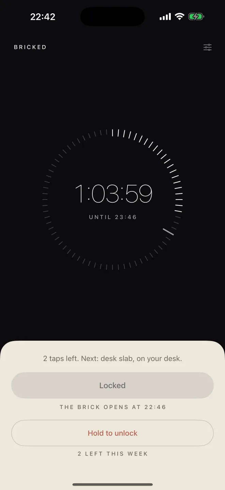
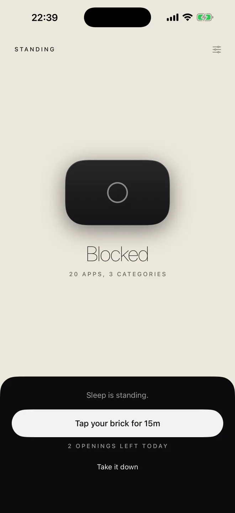
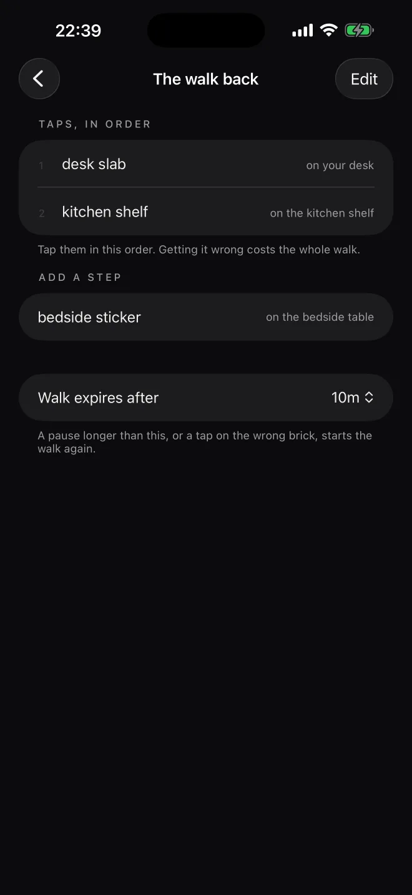
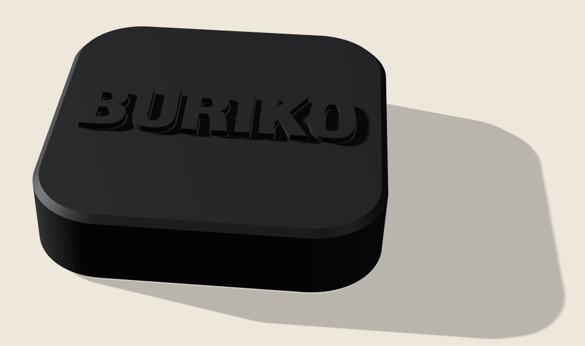

Blocking an app takes one tap. So does unblocking it, with the same thumb, in the same three seconds as the urge. buriko keeps the first tap and moves the second one to another room.
Instant to enter. Slow to leave.
-
Tap
Hold the phone to the brick and pick a length, fifteen minutes or more. The apps you chose go behind a shield.
-
Leave
The brick stays on the shelf. The phone comes with you. A blocked app shows the time left and where you left the brick.
-
Come back, or don't
It ends by itself at the time you set. Walk back and tap early once the minimum has passed. Before that, the app says
Not yet.
and the time remaining.
An instrument, not a dashboard.
State on the dark surface, controls on the paper card. Monochrome, except for one colour where a session breaks.

RunningThe long tick marks when the brick starts to work, so you know before you walk back whether the walk is worth it. 
ReverseBlocked by default. A tap opens a fixed window that closes by itself. 
RoutesPair more than one brick and the way out becomes a walk: desk, then kitchen, in order. A wrong tap starts it again.

42 mm of plastic, with a tag inside.
An NFC sticker sealed into a printed shell, with no opening anywhere. The models and print profiles are public domain. Any NTAG sticker works: the app pairs on the tag's own ID, so no sticker is special.
No brick yet? Face ID can stand in. It is the weaker key, and the app says so: the key is in your hand instead of across the room. Pair a brick later and it takes over.
Real Screen Time restrictions, and a few rules.
- Fifteen minutes at least
- Apple's scheduler refuses anything shorter, so the app never offers it.
- Every session has an end
- It clears itself at the time you set, with the app closed. A forgotten brick never strands you.
- Three emergency unlocks a week
- Behind a ten-second hold. The valve has to exist. It shouldn't be something a thumb does by reflex.
- Nothing leaves the phone
- No account, no analytics, no networking code at all. The source is public, so that is checkable.
- It never learns what you blocked
- Apple hands the app opaque tokens. It stores them without decoding them.
- No streaks, no scores
- Those make the phone matter more. The point is to stop caring about it.
Deleting buriko removes every restriction it applied.
To shut that door: Settings → Screen Time → Content & Privacy Restrictions → App Deletion → Don't Allow.
A session you walk away from.